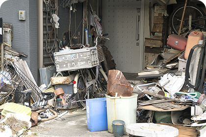
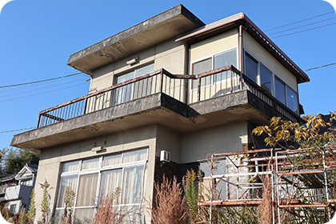
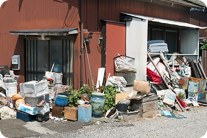
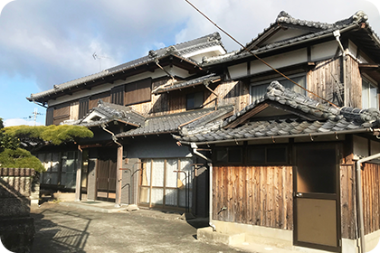
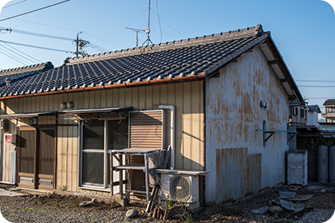
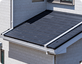

相続「する」側の方は
こちら
千葉県市川市に地域密着！ 相続された不動産を 売却もしくは管理で お手伝いさせてください
相続した不動産（物件）で
このようなお悩みは
ありませんか？
不動産相続ではさまざまなトラブルが起こります。「相続人同士で揉めて手続きが進まない」「使わない土地を相続した結果、維持費がかさんで困っている」など、お悩みの内容もさまざまです。「不動産を相続したいけど、相続財産に借金も含まれている」といった、素早い決断が求められるお困りを抱えている方もおられます。
-
テキストテキストテキストテキストテキスト
-
テキストテキストテキストテキストテキスト
-
テキストテキストテキストテキストテキスト
-
テキストテキストテキストテキストテキスト
私たちは
相続に関わるお悩み事を
解決する不動産のプロです
不動産相続のお悩み・お困りを抱えている方は、まず南口不動産にお話をお聞かせください。当社は相続不動産を取り扱うプロです。あらゆる種類のトラブルを解決に導いてきた実績があり、「争族」に発展するリスクを抑えながら、将来の遺恨を生むことなく相続を完了させるべくサポートいたします。 当社の強みは、相続開始後に「相続される側」の方への相続対策ができるだけではなく、「相続する側」の方から生前対策に関するご相談をお寄せいただけることです。これまでに築き上げてきたネットワークを生かし、司法書士や会計士とも連携しながら相続不動産問題を解消させています。売却・賃貸のご相談はもちろん、生前対策のご相談も当社にお任せください。
相続した物件の対応方法を
もうすこし
分かりやすくしてみました
不動産は預貯金と違って平等な分割が困難です。代償分割などいくつかの方法で相続人を決められますが、トラブルの火種になることも珍しくありません。複数の相続人間で不動産を平等に分割したい場合は、不動産売却によって現金化した上で配分することも選択肢に加えましょう。希望額で売りたい場合は仲介売却、素早く売りたい場合は不動産買取が適しています。
これまで不動産を 相続したことが無い方へ
ほとんどの方が不動産相続を始めて経験されることと存じます。ご家族を失った悲しみの中、葬儀などの手配と並行して慣れない不動産相続の手続きを行うのは、精神的にも肉体的にも大きなダメージとなるはずです。南口不動産は士業とも連携しながら不動産問題・相続問題を解消させられるため、まずは当社にお話をお聞かせください。
相続に関するお金(税金)や 基本的な流れを知りたい方へ
不動産を相続する場合は相続税が、相続不動産を売却する場合は譲渡所得税がかかる可能性があります。税金の計算はとても複雑ですが、計算を誤り自己判断で確定申告を怠ると「脱税」とみなされるリスクがあるため要注意です。南口不動産では、連携する会計士が控除額などを正確に計算し、税金や手数料の金額・内訳をご提示いたします。
空き家・空き地も放っておくと 問題が出てくるかもしれません
利用していない空き家・空き地はつい放置しがちです。しかしそのままでは延々と固定資産税を支払わなければならず、時間の経過とともに土地や建物は劣化してしまいます。最悪の場合は高額な解体費用が請求されるほか、災害がきっかけで周囲の人や物を傷付ける恐れもあるため、早めの売却がおすすめです。
- 
- 
- 
- 
- 
その他、相続以外でも 不動産売却のご相談を承っております 不動産売却のご相談を 承っております
南口不動産は相続以外の不動産売却も承ります。当社には市川市に密着した営業を続けることで得たネットワークがあり、適正価格かつ素早い売却にご期待いただけます。Zoomを利用したオンライン商談もご利用いただけるため、遠方にお住まいの方も安心してご相談ください。

理想の価格で
高く売りたいなら
仲介売却
当社が売主様と買主様を仲介して、一般消費者の方へ売却する方法です。市場価格に沿った売却価格を付けられるため高値での売却を目指せます。売却期間の目安は3ヶ月～6ヶ月ですが、当社はノウハウをフル活用した仲介売却を行っており、平均して3ヶ月前後での売却を可能にしております。
家財家具そのままで
早く売りたいなら
不動産買取
当社がお客様の不動産を直接買取する方法です。査定価格にご納得いただけた場合、最短数日で不動産を現金化できます。当社では他社様では断られてしまうような瑕疵物件も積極的に買取しているほか、残置物（家財やごみなど）がそのままの状態でお売りいただくことも可能です。
南口不動産がお客様から 選ばれる４つの理由
市川市には多くの不動産会社がありますが、おかげさまで当社は多くのお客様から選ばれています。「不動産売却が成功するかどうかは不動産会社選びで決まる」といわれるほど会社選びは重要ですが、なぜ当社は大手企業と比較したお客様からも選ばれているのでしょうか。僭越ながらその理由を4つご紹介します。
-
お客様のご希望の価格でできるだけ売れるように対応
当社はさまざまな不動産関連会社と連携しています。過去の売買実績により確保した独自のコネクションもあり、販売ルートを多彩に備えていることが特徴的です。お客様からお預かりした不動産を「買いたい層」に向けて直線的に供給できるため、スピーディーかつ適正価格での売却を実現できます。
-
少しでも高く売るための施策がございます
当社オリジナルの施策として、独自の仕掛けが入った販売促進チラシの配布や、「建物検査報告書」の無料作成などを行っています。状況により、建物を解体して空き地にするといった大胆な施策のご提案も可能です。当社は売主様の不動産をより魅力的に見せる方法を熟知しているため、高値での売却にご期待いただけます。
-
売却するために自社のネットワークを活用
南口不動産が持つ特有のネットワークを活かし、素早い売却が可能です。仲介買取の場合、物件にもよりますが平均して3ヶ月前後で売却が完了します。不動産買取の場合は、残置物ありの物件や瑕疵物件も買取の対象としており、他社では断られてしまうような不動産も素早くお売りいただけます。
-
売却なのか管理なのか
賃貸なのか詳しく伺った上でのご提案当社は不動産売却に特化せず、不動産管理や賃貸なども臨機応変にご提案しております。「売るべきか貸すべきか悩んでいる」という方も、まずは当社にご相談ください。物件の立地や広さなどを確認し、お客様のご意向を尊重した上で、最適なメニューをご提案いたします。